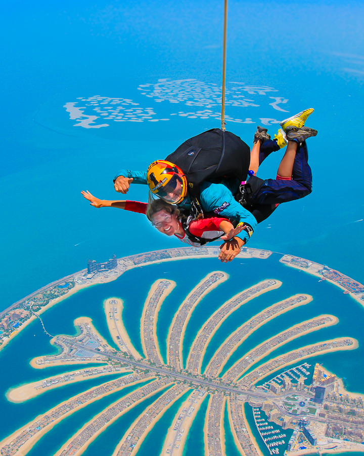
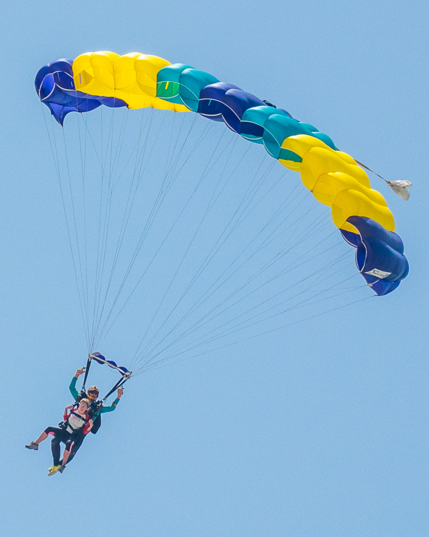

Skydiving in Dubai was easily one of the most exhilarating experiences of my entire life. If you’re even considering skydiving, I highly, highly recommend it. I would do it again in a heartbeat!! I definitely hope I have the chance to go skydiving again in the future.A tandem skydive over The Palm in Dubai is approximately $600 USD. You are attached to an experienced instructor. The price includes all photos and a video.
It does not include insurance or the one-minute Instagram video, which can be purchased separately. I did not get the insurance or the Instagram video. It already comes with a video, the Instagram video is just a shorter version of that video to meet Instagram’s one minute video limit.Dubai enjoys year-round sunshine and very little rain. However summer in the desert can be hot, so to avoid the heat, the best time for skydiving is during the winter, from October to April.
The best time of day for skydiving is in the morning, 10 AM. This is for lighting, weather, and to avoid the afternoon heat.

You will jump out of the plane 13,000 feet over The Palm in Dubai!You will free fall over Dubai at approximately 120 miles per hour!After jumping out of the plane, you will free fall approximately 60 seconds. After the parachute is deployed, you will gently float for about 5 minutes for the remaining descent.
Plan for at least 3-4 hours from the time you check in to the time you leave with your photos. First you will check in, where they will calculate your weight and BMI. Then you will get outfitted with your gear, meet your instructor, and do an interview with your photographer.
Once on the plane, the take-off, ascent, skydive, and landing takes approximately 20 minutes. Your videos and pictures will be ready to pick up about 45 minutes after you land.
The best thing to wear for skydiving in Dubai is athletic, comfortable clothes with sneakers or athletic shoes. The clothes should be not too loose and not too tight. You should be able to move easily in the clothes.
Because of the skydiving gear you need to wear, you must be wearing a shirt with sleeves (no sleeveless shirts are allowed) and longer shorts or pants.